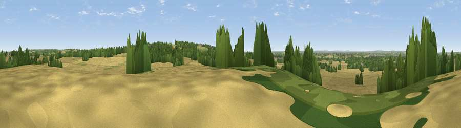

Viewpoint near Maxstoke
#38288 in England · top 70% of its area beats it · near MaxstokeThe view, rendered

A 360° render of this exact spot computed from the terrain model, tree cover and land cover — summer colours, afternoon light, calibrated against photographs of famous viewpoints. Real trees, hedges and buildings will differ in detail.
The panorama
Grey silhouette: terrain skyline in each direction (720 bearings, Earth curvature and refraction included). Dashed green: skyline with trees (+15 m) and buildings (+8 m) as obstacles. Blue strip: how far the ground is visible on each bearing.
Where the view opens
Wedge length = distance to the farthest visible ground on that bearing (vegetation-aware). Rings at 10, 25 and 50 km.
What fills the view
61% cropland · 19% woodland · 17% grassland · 3% built-up
Angular shares of the visible panorama (visual magnitude), not map area. Landscape diversity 0.45 (0–1 Shannon).
Key numbers
More beautiful places nearby
The staircase of upgrades: each row has a higher view potential than everything closer. Driving times are estimates from straight-line distance, calibrated against real road routing — check an actual route before setting out.
| Place | Direction | Drive | Score |
|---|---|---|---|
| Wood End Hill | SSE · 5 km | ~10 min | 50.0 |
| Viewpoint near Coleshill Heath | SW · 5 km | ~11 min | 58.9 |
| Viewpoint near Ansley Common | NE · 9 km | ~18 min | 69.0 |
| Viewpoint near Streetly | WNW · 20 km | ~34 min | 69.5 |
| Windmill Hill | WSW · 29 km | ~46 min | 73.2 |
| Viewpoint near Clent | WSW · 32 km | ~49 min | 73.8 |
| Viewpoint near Clent | WSW · 32 km | ~50 min | 74.3 |
| Viewpoint near Stanton under Bardon | NE · 33 km | ~51 min | 76.0 |
52.49365, -1.64389 · source: screening · position refined by local search. Computed location — check access rights before visiting.